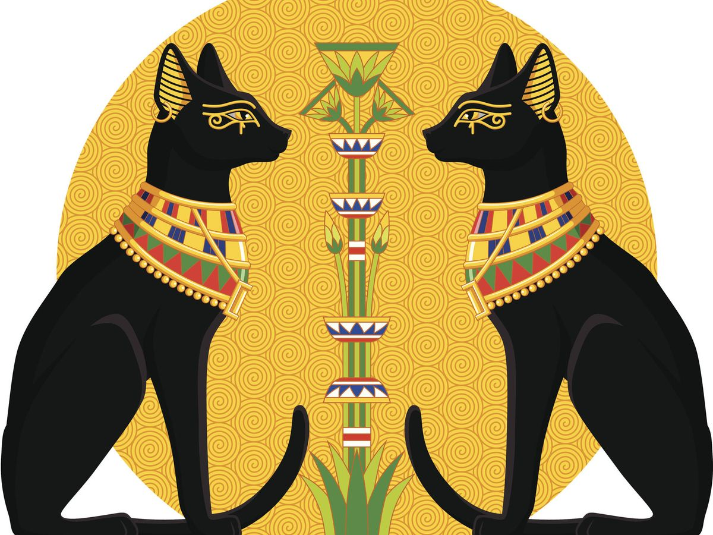
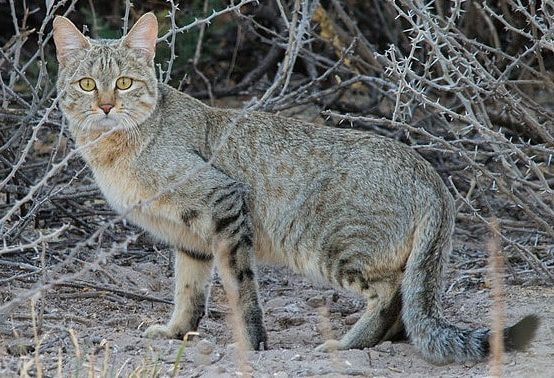
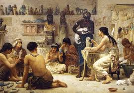

Relación de los Egipcios con los Gatos
Durante el Imperio Nuevo, que tuvo lugar entre los años 1550 y 1069 a. C. estos felinos fueron los animales más venerados tanto por los faraones como por todo el pueblo. Ya que los Egipcios pensaban que eran las figuras de poder de su cultura, que venían a ser tanto dioses comos gobernantes, poseían cualidades felinas.
Origen
¿De donde provienen?
Los gatos domesticados descienden del gato salvaje africano o "Felis silvestris lybica", una subespecie salvaje que se encuentra en el norte de África y Oriente Medio. Los gatos fueron domesticados hace unos 10 mil años por los primeros agricultores en Oriente Próximo.
Los primeros asentamientos agrícolas probablemente atrajeron a gatos monteses porque estaban llenos de roedores y los granjeros dieron la bienvenida a los gatos monteses porque mantuvieron las existencias de grano de cereal libres de alimañas.
¿Quien es Felis silvestris lybica?
El gato salvaje africano o gato del desierto (Felis silvestris lybica) es una subespecie del gato montés. Se cree que fue el primer gato domesticado, y que fueron los antiguos egipcios o alguna civilización relacionada q uienes lo domesticaron, hace al menos 4000 años.
Creencias que los egipcios tenian hacia los gatos
Ellos creían que los gatos eran seres protectores, leales y cariñosos a veces, pero también la fama de ser grandes estrategas, belicosos e independientes. La gran Esginge de Giza, sin ir más lejos, tiene la cara de un hombre pero el cuerpo de un felino, tal vez por eso es una de las joyas arquitectónicas más majestuosas del valle del Nilo que atrae a millones de visitantes al año junto con las pirámides.
